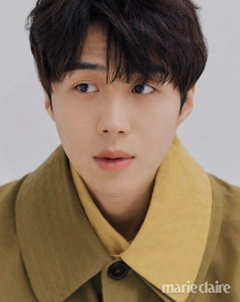
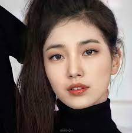
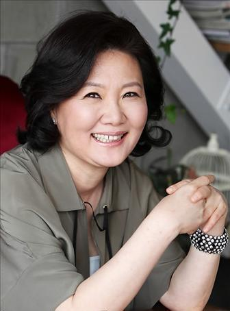

O melhor elenco
Kim Seon-ho
Kim Seon-ho é um ator sul-coreano. Ele começou sua carreira no palco e apareceu em várias peças antes de fazer sua estréia no cinema em 2017 com Good Manager. Ganhou destaque com a série de televisão de 2020, Start-Up.
Suzy
Bae Su-ji, mais conhecida na carreira musical por seu nome artístico Suzy, é uma cantora e atriz sul-coreana. Realizou sua estreia no cenário musical em 2010 no grupo feminino miss A. No ano seguinte, iniciou sua carreira como atriz protagonizando a série de televisão Dream High.
Nam Joo-hyuk
Nam Joo-hyuk, é um ator e modelo sul-coreano. Ele iniciou sua carreira como modelo em 2013 e no ano seguinte realizou sua estreia na televisão como ator, desde então destacou-se em dramas coreanos, que incluem Who Are You: School 2015, Weightlifting Fairy Kim Bok-joo.
Kim Hae-sook
Kim Hae-sook, é uma atriz sul-coreana, conhecida por sua extensa carreira artística no cinema e na televisão asiática.